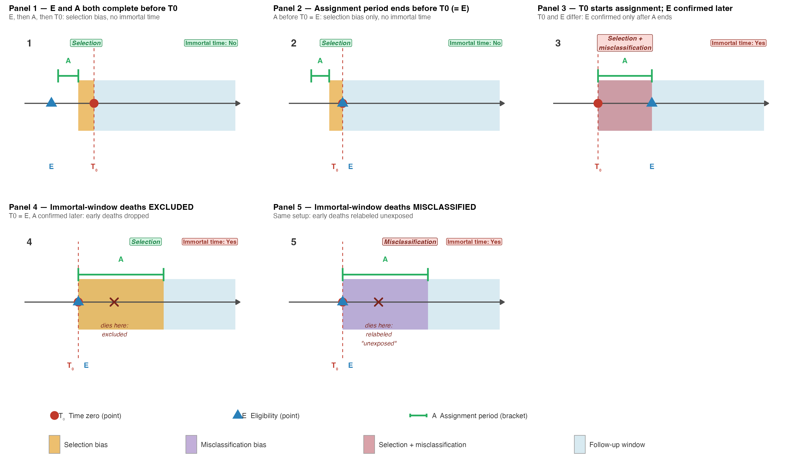
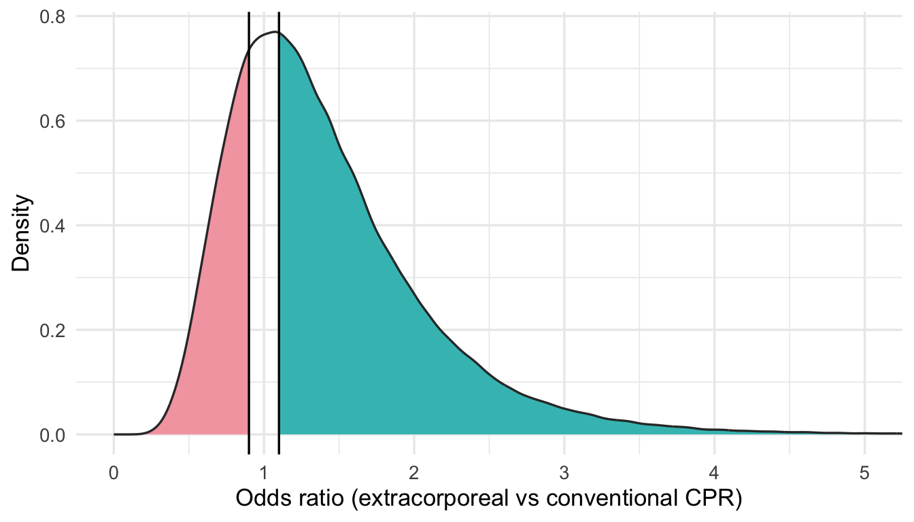
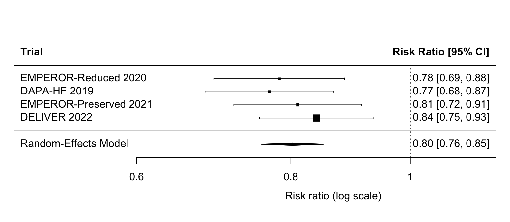

turn a PICO question into operational inclusion and exclusion criteria that two reviewers will apply in the same way;
explain how the type of review question (effectiveness, aetiology, diagnosis, prognosis) determines the eligible designs, the data to extract and the risk-of-bias tool;
explain why target trial emulation succeeds or fails depending on how time zero is aligned, and recognise immortal time bias in a published study;
design a data extraction form, organise dual extraction, and anticipate the common extraction errors;
compute the effect measures a meta-analysis needs from what a paper actually reports, including back-calculating missing standard deviations;
link multiple reports to a single study, use the trial register to audit outcome reporting, and validate an extraction sheet in R before analysis.
R packages:rentrez, dplyr, ggplot2, survival, epiR, metafor, brms (optional).
Chapters 1 and 2 explained why evidence must be synthesised and how to find it. This chapter closes the gap between the question and the numbers that enter the analysis. Two steps of a systematic review sit in that gap: defining which studies are eligible, and extracting data from those that are. They are where most methodological errors are made in practice. Inclusion criteria that do not match the estimand admit the wrong studies; extraction errors put the wrong numbers into the analysis; missing outcome data bias the pooled estimate; and inconsistent extraction between reviewers adds noise.
Garbage in, garbage out
Errors at this stage are very hard to detect later. A forest plot built on mis-extracted numbers looks exactly like one built on correct numbers.
3.1 From question to eligibility criteria
3.1.1 A worked example: which records belong?
Suppose the question is: do glucagon-like peptide-1 receptor agonists (GLP-1 RAs) reduce myocardial infarction and major adverse cardiovascular events (MACE) in adults with type 2 diabetes or cardiometabolic risk, compared with placebo? Using the approach of Section 2.6.3, the PubMed query combines a drug concept, an outcome concept and a design filter. As in Section 2.6, the search was run once and its result saved, with the date, so the numbers below do not change each time the book is rebuilt; delete the saved file to rerun it.
Code
query <-'("glucagon-like peptide-1 receptor agonists"[MeSH Terms] OR liraglutide[Title/Abstract] OR semaglutide[Title/Abstract] OR dulaglutide[Title/Abstract] OR exenatide[Title/Abstract] OR lixisenatide[Title/Abstract] OR efpeglenatide[Title/Abstract]) AND ("myocardial infarction"[MeSH Terms] OR "cardiovascular diseases"[MeSH Terms]) AND "randomized controlled trial"[Publication Type] AND "humans"[MeSH Terms]'glp1_file <-"data/glp1_mace_search.rds"if (!file.exists(glp1_file)) { hits <- rentrez::entrez_search(db ="pubmed", term = query, retmax =10) summ <- rentrez::entrez_summary(db ="pubmed", id = hits$ids)saveRDS(list(date =Sys.Date(),query = query,count = hits$count,first_page =data.frame(PMID = hits$ids,Year =vapply(summ, function(x) substr(x$pubdate, 1, 4), ""),Title =vapply(summ, function(x) x$title, ""))), glp1_file)}glp1 <-readRDS(glp1_file)
On 13 November 2026 the query returned 255 records. entrez_search() returns only a count and a list of PubMed identifiers; entrez_summary() turns the identifiers into readable records (Table 3.1).
Efficacy and Safety of Semaglutide According to Frailty Status: A Post Hoc Analysis of the
42679726
42679726
2026
Effects of semaglutide and empagliflozin on markers of endothelial function in persons wit
42610271
42610271
2026
Effect of Semaglutide on the Inflammatory Biomarker High-Sensitivity CRP in Patients With
42608321
42608321
2026
Retatrutide-Associated Improvements in Cardiovascular Risk Biomarkers in Adults With Obesi
42390946
42390946
2026
A validated, modifiable proteomic score from the EXSCEL trial predicts cardiovascular even
42387302
42387302
2026
Potential Mediators of Efpeglenatide’s Cardiovascular Benefit: An Exploratory Analysis of
42287159
42287159
2026
Post hoc analysis of SURMOUNT-J: tirzepatide versus placebo and predicted 10-year cardiova
42233552
42233552
2026
Kidney and Survival Benefits of Semaglutide in Diabetes With Chronic Kidney Disease: FLOW
42227113
42227113
2026
Accounting for non-adherence: A re-analysis of the Liraglutide Effect and Action in Diabet
42159524
42159524
2026
The Liraglutide Effects in Atrial Fibrillation (LEAF) Study.
The first page is typical: mixed relevance, nothing annotated. Somewhere among the records are the trials that matter, and several of them raise exactly the judgements that eligibility criteria must settle before screening begins (Table 3.2).
Table 3.2: Records from the GLP-1 RA search that test the eligibility criteria.
Does a population without diabetes fit the question?
Secondary reports of these trials
—
Same participants
Biomarker and renal papers: new studies, or reports of the same study?
The question as worded (“type 2 diabetes or cardiometabolic risk”) arguably admits SELECT; a criterion of “adults with type 2 diabetes” excludes it. Neither choice is wrong, but it must be made in the protocol, not after seeing that SELECT reported a favourable result. Secondary reports are a different matter: they are not separate studies at all (Section 3.6).
3.1.2 Operational criteria
PICO is a framework for thinking; inclusion criteria are its operational expression, specific enough that two reviewers working independently reach the same decision on the same record (7). Table 3.3 contrasts vague and operational versions for a review of SGLT2 inhibitors in heart failure.
Table 3.3: From PICO to operational criteria.
Element
Vague
Operational
Population
Adults with heart disease
Adults aged 18 years or more with physician-diagnosed heart failure and ejection fraction below 40%
Intervention
SGLT2 inhibitor
Any licensed SGLT2 inhibitor at an approved dose for at least 12 weeks
Comparator
Placebo or usual care
Placebo, or standard care without an SGLT2 inhibitor
Outcome
Heart failure outcomes
Composite of cardiovascular death or hospitalisation for heart failure; all-cause death; KCCQ score
Time
Not stated
Outcomes assessed at 12 months or later
The vague versions fail in predictable ways. “Heart disease” mixes myocardial infarction, heart failure and arrhythmia, which cannot sensibly be pooled. “Beta-blockers” includes drugs that are not interchangeable. “Mortality” could mean all-cause or cardiovascular, in hospital or at five years. “Long-term” is not a criterion at all. Each ambiguity is a researcher degree of freedom, and each one resolved after seeing the data inflates the chance of a false-positive conclusion (8).
3.1.3 Time, and intercurrent events
Time is not a footnote to PICO; it is part of what makes the estimand estimable (Section 1.3). A pre-specified time does two jobs. It says when an outcome counts, so “outcomes at 12 months or later” is a criterion, not a preference. And it fixes when the clock starts relative to eligibility and treatment assignment; misalign these and immortal time bias follows (Section 3.2.1).
Time alone does not complete the estimand. It also needs a pre-specified strategy for intercurrent events: participants who stop treatment, switch, or need rescue medication before follow-up ends (9). An intention-to-treat analysis, which analyses everyone as randomised, corresponds to the treatment-policy strategy. A per-protocol analysis, restricted to adherent participants, roughly targets a hypothetical strategy: what would have happened had everyone adhered? Applied to the same trial, the two answer different questions. A review that takes the intention-to-treat result from one trial and the per-protocol result from another pools two estimands as if they were one, which is why the choice belongs in the protocol and is checked at extraction (Section 3.4.3).
3.1.4 Types of review question
The type of question determines the eligible designs, the effect measure, the main threats to validity and the risk-of-bias tool (Table 3.4).
Table 3.4: Types of review question.
Question type
Example
Designs
Effect measures
Risk-of-bias tool
Effectiveness
Do SGLT2 inhibitors reduce cardiovascular death in heart failure?
Randomised trials; observational studies under pre-specified conditions
RR, OR, HR, RD
RoB 2; ROBINS-I (Chapter 5)
Aetiology
Is exposure E associated with outcome O?
Cohort, case–control
RR, OR, HR
ROBINS-E
Diagnostic accuracy
How well does test T identify condition C?
Cross-sectional comparison with a reference standard
Sensitivity, specificity, likelihood ratios
QUADAS-3
Prognosis
What happens to patients with condition C, and can we predict it?
Prospective cohort
Absolute risk, discrimination, calibration
PROBAST (models), QUIPS (factors)
For aetiology the exposure often cannot be randomised (smoking, genes, poverty), so confounding and selection bias are the main threats. Diagnostic questions replace PICO with population, index test, reference standard and target condition. Prognostic questions add setting and time (PICOTS).
Diagnostic accuracy: QUADAS-3
QUADAS-3 (10,11) replaced QUADAS-2 in 2026. It assesses risk of bias in four domains: participants (was recruitment free of selection bias?), index test (was it conducted and interpreted blind to the reference result, with a pre-specified threshold?), target condition (formerly “reference standard”: does it correctly classify who has the condition?) and analysis (formerly “flow and timing”: were all participants accounted for, and indeterminate or missing results handled appropriately?). Applicability to the review question is judged for the first three domains.
Three changes matter most. Reviewers first define the ideal test accuracy trial for their question and judge real studies against it. Judgements are made for each accuracy estimate, not each study, since one paper may report accuracy in several subgroups. And signalling questions are answered on a five-point scale (yes, probably yes, probably no, no, no information) rather than yes, no or unclear.
Prognostic models: PROBAST
PROBAST assesses studies that develop, validate or update multivariable prediction models (12,13). Its 20 signalling questions, phrased so that “yes” indicates absence of bias, fall into four domains: participants (appropriate data source and inclusions), predictors (defined and assessed the same way for everyone, without knowledge of the outcome, and available when the model would be used), outcome (pre-specified, determined the same way for everyone and blind to predictors, with an appropriate interval) and analysis (enough events per candidate predictor, no univariable pre-selection, appropriate handling of missing data, censoring and competing risks, and correction for overfitting). A study is at low risk of bias only if all four domains are at low risk; a model developed without any external validation is usually rated high risk, unless the development sample was very large and internally validated.
3.1.5 Principles for inclusion and exclusion criteria
Whatever the question type, the criteria are written into the protocol before a single record is screened.
Inclusion criteria should be pre-specified in the registered protocol; derived from the estimand, so that each criterion maps to a component of P, I, C, O or T; no more restrictive than the question requires, since each one reduces generalisability; explicit about partial information (what if a trial reports outcomes at 6 and 24 months but not 12?); and applied to studies, not reports.
Exclusion criteria should be justified by the estimand rather than by convenience, kept to a minimum, and explicit about studies that partly meet the criteria. Legitimate exclusions include non-human studies and studies whose outcome data cannot be obtained even after contacting the authors. Illegitimate exclusions include studies with unwelcome results, studies in languages the reviewers do not read (use translation), and older studies, unless the intervention did not exist.
3.1.6 Which studies can be pooled?
Not every included study should be pooled with every other. The Cochrane Handbook asks reviewers to pre-specify how studies will be grouped for synthesis (7). In practice, “can these be pooled?” means “do these studies share the same estimand?”: the same operationally defined P, I, C and O, and a compatible T. Pooling is reasonable when populations are clinically similar, the effect measure is the same (or transformable to the same scale), and outcome definitions and timing are compatible.
Studies should be analysed separately when interventions differ in mechanism, populations differ fundamentally (children and adults, say), outcome definitions are incompatible, or designs are too heterogeneous. A structured narrative synthesis is then the right output.
Computable is not meaningful
Any set of numbers can be averaged. The question is whether the pooled estimate answers a clinically meaningful question. A forest plot that should not exist is worse than no forest plot.
3.2 When eligible studies are observational
Effectiveness reviews increasingly include observational studies, especially when trials are few or short. Two recent studies show why their eligibility, and their design, must be scrutinised rather than assumed.
3.2.1 The promise of target trial emulation
Target trial emulation (TTE) asks investigators to specify the randomised trial they would ideally run (eligibility, treatment strategies, assignment, time zero, outcomes, analysis) and then emulate it as closely as possible with observational data (14). It is now widely cited in cardiology, oncology and pharmacoepidemiology as a remedy for confounding and immortal time bias.
The key feature of a randomised trial that an emulation must copy is that eligibility, treatment assignment and the start of follow-up (time zero) coincide. When they do not, bias follows even if every other step is done well. Figure 3.1, adapted from (15), catalogues the ways alignment can fail.

Figure 3.1: Failure modes when eligibility (E), treatment assignment (A) and time zero (T0) are not aligned. In panels 1 and 2, assignment is resolved before time zero: selection bias without immortal time. In panel 3, time zero precedes both eligibility and assignment: selection bias with immortal time, since no one can die before completing eligibility. In panels 4 and 5, time zero coincides with eligibility but assignment is confirmed later: classic immortal time bias, in which deaths during the immortal window are either excluded (selection) or counted as unexposed (misclassification). Adapted from (15).
3.2.2 Example: GLP-1 RAs and breast cancer survival
A 2026 cohort study in a high-impact journal used a US electronic health record network to compare women with breast cancer who did or did not use GLP-1 RAs (16). Of more than 840 000 eligible patients, propensity-score-matched cohorts were formed among women with obesity (users versus non-users) and with type 2 diabetes (GLP-1 RAs versus insulin or metformin, and versus SGLT2 inhibitors). The reported hazard ratios for 10-year all-cause mortality were 0.35 (95% CI 0.21 to 0.58) in the obesity cohort and 0.09 (0.06 to 0.15) against insulin or metformin, a 91% reduction in the risk of death.
The design explains the size of these effects. Exposure was defined as at least two prescriptions, but follow-up started at diagnosis. A woman could only be classified as exposed if she survived long enough to fill a second prescription; deaths before that point counted against the unexposed group. This is the arrangement of panels 4 and 5 in Figure 3.1.
How large can the resulting bias be? A simulation answers the question directly. We generate breast cancer patients whose survival is completely unaffected by the drug (true HR = 1). A fraction of them start a GLP-1 RA at some point after diagnosis and fill a second prescription one to three months later. We then analyse the same data three ways:
As in the paper: exposure fixed at baseline (“ever had two prescriptions”), clock starting at diagnosis.
Landmark analysis: patients who died before 6 months are excluded and the clock restarts there, but exposure is still defined by any later second prescription. This was the paper’s sensitivity analysis.
Time zero aligned: exposure is time-varying, so each patient contributes unexposed person-time until her second prescription and exposed person-time afterwards.
Code
# One simulated cohort, analysed three ways. The drug has NO effect on survival.simulate_itb <-function(n =5000, # patients per cohortmedian_start =18, # median months from diagnosis to 1st Rxp_user =0.3, # proportion who ever start the drugmedian_surv =60, # median survival, monthsmax_fu =120, # administrative censoring, monthslm_time =6) { # landmark, months t_death <-rexp(n, log(2) / median_surv) user <-runif(n) < p_user t_rx1 <-ifelse(user, rexp(n, log(2) / median_start), Inf) t_rx2 <- t_rx1 +runif(n, 1, 3) # 2nd prescription 1-3 months later time <-pmin(t_death, max_fu) status <-as.integer(t_death <= max_fu) exposed <- t_rx2 < time # survived to fill a 2nd prescription d <-data.frame(id =seq_len(n), time, status, exposed, t_rx2)# 1. Paper's design: exposure fixed at baseline, clock starts at diagnosis hr_naive <-exp(coef(coxph(Surv(time, status) ~ exposed, data = d)))# 2. Landmark: exclude deaths before lm_time, restart the clock there dl <-subset(d, time > lm_time) hr_lm <-exp(coef(coxph(Surv(time - lm_time, status) ~ exposed, data = dl)))# 3. Aligned: unexposed until the 2nd prescription, exposed afterwards pre <-data.frame(id = d$id, start =0, stop =pmin(d$time, d$t_rx2),event =ifelse(d$exposed, 0L, d$status), x =0L) de <-subset(d, exposed) post <-data.frame(id = de$id, start = de$t_rx2, stop = de$time,event = de$status, x =1L) hr_tv <-exp(coef(coxph(Surv(start, stop, event) ~ x,data =rbind(pre, post), timefix =FALSE)))c(paper =unname(hr_naive), landmark =unname(hr_lm),aligned =unname(hr_tv))}
We repeat the simulation 200 times for each of three scenarios in which patients start the drug, on average, 6, 18 or 36 months after diagnosis.
Code
set.seed(2026)scenarios <-c(6, 18, 36)itb <-do.call(rbind, lapply(scenarios, function(m) { r <-t(replicate(200, simulate_itb(median_start = m)))data.frame(delay = m, r)}))itb_summary <- itb |>group_by(delay) |>summarise(across(c(paper, landmark, aligned), median))kable(itb_summary, digits =2,col.names =c("Median delay to 1st Rx (months)","As in the paper", "Landmark", "Time zero aligned"))
Figure 3.2: Hazard ratios from 200 simulated cohorts per scenario in which the drug has no effect (true HR = 1, dashed line). The longer patients wait before starting treatment, the more immortal time is credited to the exposed group.
With a drug that does nothing, the paper’s design produces median hazard ratios of 0.81, 0.66 and 0.57 as the delay to treatment lengthens. The landmark analysis reduces the bias only slightly, because immortal time after the landmark is still credited to the exposed group. Only the time-aligned analysis recovers the truth. The simulated bias is smaller than the published effects, but the simulation is deliberately simple: it ignores confounding by indication, and the real comparison against insulin or metformin adds differences in disease severity.
The paper also contained an unrecognised clue. Against SGLT2 inhibitors, GLP-1 RAs showed no difference (HR 0.97, 0.82 to 1.14). Both groups had to survive long enough to fill two prescriptions, so immortal time was roughly symmetrical and cancelled out. Attenuation towards the null when the comparator shares the same bias is exactly what immortal time bias predicts.
3.2.3 Example: GLP-1 RAs and obesity-associated cancers
A second 2026 study, in an oncology journal of even higher impact, explicitly described itself as a target trial emulation (17). In a database of 113 million US patients it matched about 81 000 adults with obesity, but without diabetes, who were prescribed a GLP-1 RA to the same number who received diet or exercise counselling, and reported a hazard ratio for 13 obesity-associated cancers of 0.59 (0.53 to 0.67) over a median follow-up of only two years.
Again the exposure was confirmed by a prescription after the index date. And again the results contained a clue. The hazard ratio was about 0.8 for semaglutide but about 0.3 for tirzepatide, a 70% reduction in cancer incidence within two years. A biological explanation for so large and so fast an effect is implausible. A design explanation is not: tirzepatide was launched in 2022, semaglutide for diabetes in 2017, so the two drugs had very different patterns of initiation relative to the index date, and therefore different amounts of immortal time.
3.2.4 TTE is a framework, not a credential
Properly implemented, target trial emulation increases transparency and eliminates self-inflicted biases such as immortal time. But citing the framework is not the same as implementing it. Even when it is implemented correctly, TTE does not guarantee the right model, high-quality data or the absence of residual confounding, and it does not justify the choice of estimand.
Two over-corrections to avoid
“Observational studies are unreliable” was too pessimistic; “well-done causal inference from observational data approximates a trial” is too optimistic. Causal inference remains an exercise in critical judgement, not the assured output of a design label. For a systematic reviewer, this means that a study’s claim to be a target trial emulation is a reason to check the alignment of eligibility, assignment and time zero, not a reason to skip the check.
3.3 Randomised trials can mislead too
Randomisation protects against confounding, not against misinterpretation. The INCEPTION trial randomised 134 patients with refractory out-of-hospital cardiac arrest to extracorporeal or conventional cardiopulmonary resuscitation (CPR) (18). At 30 days, 14 of 70 patients in the extracorporeal group (20%) and 10 of 62 in the conventional group (16%) had a favourable neurological outcome (OR 1.4, 95% CI 0.5 to 3.5; P = 0.52). The authors concluded that the two strategies had similar effects.
That conclusion confuses absence of evidence with evidence of absence (Section 1.4). A Bayesian reanalysis makes the point concrete. With independent, flat Beta(1, 1) priors on the probability of a good outcome in each arm, the posterior for each arm is also a beta distribution, so the posterior of the odds ratio can be simulated exactly in a few lines.
dens <-density(or_post, from =0, to =6, n =2048)dd <-data.frame(x = dens$x, y = dens$y)ggplot(dd, aes(x, y)) +geom_area(data =subset(dd, x <=0.9), fill ="#f4a6b0") +geom_area(data =subset(dd, x >=1.1), fill ="#3fbfbf") +geom_line(colour ="grey20") +geom_vline(xintercept =c(0.9, 1.1)) +coord_cartesian(xlim =c(0, 5)) +labs(x ="Odds ratio (extracorporeal vs conventional CPR)", y ="Density")

Figure 3.3: Posterior distribution of the odds ratio for a favourable outcome with extracorporeal versus conventional CPR in the INCEPTION trial (flat priors). The vertical lines bound a range of practical equivalence (0.9 to 1.1); the shaded areas show the probability of meaningful harm (left) and meaningful benefit (right).
The posterior median odds ratio is 1.28 (95% credible interval 0.54 to 3.12). The probability that extracorporeal CPR improves outcomes is 71%, and the probability of a clinically meaningful benefit (OR above 1.1) is 63%, whereas the probability that the two strategies are practically equivalent is only 15%. The data do not show “similar effects”; they show that the trial was too small to tell.
The same model can be fitted with brms, the interface to Stan used for Bayesian models throughout this book; Bayesian methods are developed fully in Chapter 13. With an identity link and no intercept, each coefficient is the probability of a good outcome in one arm, and the posterior draws reproduce the beta distributions above.
For a systematic reviewer the lesson is practical: extract the numbers, not the authors’ verbal conclusion. “No difference” in an abstract may describe a trial that is entirely compatible with an important benefit.
3.4 Data extraction
3.4.1 What to extract, and who extracts it
Data extraction transfers information from the included studies into a structured form that allows synthesis (19). Four groups of items are extracted:
study characteristics: design, setting, country, dates, funding source and conflicts of interest;
interventions: drug, dose, duration, route, co-interventions, and the comparator;
outcomes: definition, timing, scale, and the data needed for the effect estimate and its precision (events and totals; means, SDs and numbers; or an estimate with its confidence interval).
Two reviewers extract independently and then reconcile. This is a methodological requirement, not a courtesy: transcription errors are common even among careful reviewers, ambiguous data are read differently by different people, and unconscious selective extraction is a form of bias. Disagreements are resolved by discussion, by returning to the paper and, if necessary, by a third reviewer. Report agreement for extraction as well as for screening (Section 2.5.4).
3.4.2 Designing the extraction form
The form is designed during the protocol stage, before the data are seen. It has one row per study (or per study and outcome); categorical items are pre-coded rather than left as free text; a notes field records ambiguities instead of resolving them silently. Pilot the form on three to five studies, revise it where reviewers disagree, and keep it under version control so that any later change is documented.
Purpose-built tools include Covidence, which integrates screening and extraction, and the free SRDR+ from the US Agency for Healthcare Research and Quality, which allows extraction forms and data to be shared publicly. REDCap or a spreadsheet will do for a small review, with care. Whatever the tool, export the raw extraction data and keep them with the analysis: they are part of the reproducible record.
In R, an extraction form is naturally a schema defined once in the protocol and joined to a record for each study. Adding a study means adding a record; the schema and the code that displays it never change.
Code
# Fixed once, in the protocolschema <-tribble(~key, ~Field, ~Type,"study_id", "Study ID", "Text","first_author", "First author", "Text","year", "Year", "Integer","design", "Design", "Categorical (RCT / cohort / ...)","n_rand", "N randomised", "Integer","mean_age", "Mean age (SD)", "Text","pct_female", "% female", "Numeric","intervention", "Intervention", "Text","dose_duration", "Dose / duration", "Text","comparator", "Comparator", "Text","outcome", "Primary outcome", "Text","followup_mo", "Follow-up (months)", "Numeric","events_I", "Events, intervention", "Integer","n_I", "Total, intervention", "Integer","events_C", "Events, control", "Integer","n_C", "Total, control", "Integer","effect", "Reported estimate", "Numeric","ci_lo", "95% CI lower", "Numeric","ci_hi", "95% CI upper", "Numeric","effect_measure", "Effect measure", "Categorical (RR / OR / HR / RD)","analysis_pop", "Analysis population","Categorical (ITT / mITT / PP)","registration", "Registration", "Text","funding", "Funding", "Text","notes", "Notes / queries", "Free text")# One study, as a reviewer would fill it inemperor_r <-list(study_id ="EMPEROR-Reduced", first_author ="Packer", year =2020,design ="RCT", n_rand =3730, mean_age ="66.9 (10.8)", pct_female =24,intervention ="Empagliflozin", dose_duration ="10 mg daily",comparator ="Placebo", outcome ="CV death or HF hospitalisation",followup_mo =16, events_I =361, n_I =1863, events_C =462, n_C =1867,effect =0.75, ci_lo =0.65, ci_hi =0.86, effect_measure ="HR",analysis_pop ="ITT", registration ="NCT03057977",funding ="Boehringer Ingelheim; Eli Lilly", notes ="")
Table 3.5 shows the result for EMPEROR-Reduced (20).
Table 3.5: A minimal extraction form, filled in for one trial.
Field
Type
Value
Study ID
Text
EMPEROR-Reduced
First author
Text
Packer
Year
Integer
2020
Design
Categorical (RCT / cohort / …)
RCT
N randomised
Integer
3730
Mean age (SD)
Text
66.9 (10.8)
% female
Numeric
24
Intervention
Text
Empagliflozin
Dose / duration
Text
10 mg daily
Comparator
Text
Placebo
Primary outcome
Text
CV death or HF hospitalisation
Follow-up (months)
Numeric
16
Events, intervention
Integer
361
Total, intervention
Integer
1863
Events, control
Integer
462
Total, control
Integer
1867
Reported estimate
Numeric
0.75
95% CI lower
Numeric
0.65
95% CI upper
Numeric
0.86
Effect measure
Categorical (RR / OR / HR / RD)
HR
Analysis population
Categorical (ITT / mITT / PP)
ITT
Registration
Text
NCT03057977
Funding
Text
Boehringer Ingelheim; Eli Lilly
Notes / queries
Free text
3.4.3 Common extraction errors
Numerical errors include extracting an odds ratio when the paper reports a risk ratio; transcription errors (0.75 recorded as 0.57, which is more common than you think); swapping the bounds of a confidence interval; entering intervention data in the comparator columns; reading a value from a figure when the table gives it exactly; and mixing intention-to-treat and per-protocol results, which, as Section 3.1.3 explained, are different estimands.
Conceptual errors include taking adjusted estimates from some studies and unadjusted from others without a pre-specified rule; treating imputed data as observed; extracting one component (cardiovascular death) when the outcome was a composite (cardiovascular death or hospitalisation for heart failure); choosing, among many reported outcomes, the most significant one; and failing to notice that the published primary outcome differs from the registered one (Section 3.6.1).
Invisible in the forest plot
None of these errors is visible in the final meta-analysis. They are found only by returning to the source, which is why extraction is duplicated and the sheet is validated before analysis (Section 3.7.1).
3.4.4 Missing and ambiguous data
Missing data at extraction are the rule, not the exception. Standard deviations, unadjusted estimates, subgroup results, specific adverse event counts and even the duration of follow-up are often missing. Pre-specify how missing data will be handled; do not decide case by case during extraction.
First check the supplementary material, the trial register, the published protocol and other reports of the same trial. Then contact the authors, especially of recent trials, and document the attempt whatever the response. Some statistics can be recovered from others (Section 3.5.3). Finally, run sensitivity analyses with and without studies that lacked key data; if the conclusions change, the missing data matter. Missing data are developed further in Chapter 14.
3.5 Effect measures: what to extract
3.5.1 Binary outcomes
The effect measure is part of the estimand and must be pre-specified (21). For binary outcomes the main options are summarised in Table 3.6; they are developed fully in Chapter 8.
Table 3.6: Effect measures for binary outcomes.
Measure
Definition
Properties
Risk ratio (RR)
\(p_I / p_C\)
Relative; intuitive
Odds ratio (OR)
\(\dfrac{p_I/(1-p_I)}{p_C/(1-p_C)}\)
Relative; used in logistic regression; exaggerates the RR when events are common
Risk difference (RD)
\(p_I - p_C\)
Absolute; most relevant to decisions
Number needed to treat (NNT)
\(1/\lvert RD \rvert\)
Absolute; depends on baseline risk and follow-up time
Hazard ratio (HR)
Ratio of instantaneous event rates
Time-to-event; summarises a possibly changing effect as one number
The choice matters. The RR and OR are similar for rare outcomes but diverge when events are common. Absolute effects depend on baseline risk: an RR of 0.75 means an NNT of 40 when the baseline risk is 10% but 400 when it is 1%. Extract both relative and absolute information where possible; if only a relative effect is reported, the control-arm risk lets you compute the absolute one.
Papers rarely report everything a meta-analysis needs, so it is worth computing the measures once from first principles. For EMPEROR-Reduced:
The risk ratio is 0.78 and the odds ratio 0.73: with a control-arm risk of 25%, the two already differ noticeably. The risk difference of -5.4 percentage points corresponds to an NNT of about 19 over the trial’s 16 months.
Hand-written formulas are worth understanding, but they are also how sign and transcription errors enter an analysis. For routine work, a function that takes the raw counts and returns every measure with its confidence interval is safer. epiR::epi.2by2() does this:
Outcome+ Outcome- Total Inc risk *
Exposure+ 361 1502 1863 19.38 (17.61 to 21.25)
Exposure- 462 1405 1867 24.75 (22.80 to 26.77)
Total 823 2907 3730 22.06 (20.74 to 23.43)
Point estimates and 95% CIs:
-------------------------------------------------------------------
Inc risk ratio 0.78 (0.69, 0.88)
Inc odds ratio 0.73 (0.63, 0.85)
Attrib risk in the exposed * -5.37 (-8.02, -2.71)
Attrib fraction in the exposed (%) -27.70 (-44.26, -13.08)
Attrib risk in the population * -2.68 (-5.05, -0.31)
Attrib fraction in the population (%) -12.15 (-14.25, -9.93)
E-value 1.87 (NA, 1.51)
-------------------------------------------------------------------
Uncorrected chi2 test that OR = 1: chi2(1) = 15.627 Pr>chi2 = <0.001
Fisher exact test that OR = 1: Pr>chi2 = <0.001
Wald confidence limits
CI: confidence interval
* Outcomes per 100 population units
3.5.2 The number needed to treat
The NNT is popular because it incorporates baseline risk in a single, apparently intuitive number. Its calculation is not error-free. An NNT is the reciprocal of a difference in cumulative incidence over a stated period. When follow-up differs between patients, simple proportions of patients with an event, or incidence rates per patient-time, are not cumulative incidences, and the NNT derived from them can be badly misleading; Kaplan–Meier estimates at a fixed time are needed instead (22). Always report an NNT with its time horizon.
The NNT also frames results favourably. An NNT of 250 could equally be described as 249 patients treated needlessly for each one who benefits; that is, 99.6% of treated patients gain nothing from treatment (22).
3.5.3 Continuous outcomes
For continuous outcomes (blood pressure, a symptom score, lung function) extract the mean, standard deviation and number of participants in each arm, and the timing of the measurement. The mean difference is the natural effect measure when all studies use the same scale; the standardised mean difference (SMD), the difference divided by the pooled SD, is used when studies measure the same construct on different scales.
Papers often report a standard error, a confidence interval or a P value instead of the SD. The SD can then be recovered (21). Two situations must be distinguished.
A confidence interval for one group’s mean. The interval is the mean ± \(t \times SE\), and \(SD = SE \times \sqrt{n}\).
A confidence interval (or P value) for the difference between two groups. Now \(SE = SD_{pooled}\sqrt{1/n_1 + 1/n_2}\), so \(SD_{pooled} = SE / \sqrt{1/n_1 + 1/n_2}\). Using \(\sqrt{n}\) here, a common mistake, gives the wrong answer.
Code
# (a) One arm reports its mean with a 95% CI: 24.1 (21.7 to 26.5), n = 60n1 <-60se_arm <- (26.5-21.7) / (2*qt(0.975, df = n1 -1))sd_arm <- se_arm *sqrt(n1)# (b) A paper reports only the mean difference between arms, -5.0,# with 95% CI -8.5 to -1.5, and 60 participants per armn_I2 <-60; n_C2 <-60df <- n_I2 + n_C2 -2se_diff_ci <- (-1.5--8.5) / (2*qt(0.975, df))sd_pooled_ci <- se_diff_ci /sqrt(1/n_I2 +1/n_C2)# (c) ... or only the mean difference and its P value, P = 0.006se_diff_p <-abs(-5.0) /qt(1-0.006/2, df)sd_pooled_p <- se_diff_p /sqrt(1/n_I2 +1/n_C2)round(c(sd_one_arm = sd_arm,sd_pooled_from_ci = sd_pooled_ci,sd_pooled_from_p = sd_pooled_p), 2)
The three recovered SDs are about 9.3, 9.7 and 9.8. Had the \(\sqrt{n}\) formula been misapplied to the difference in (b), the result would have been 19.4, wrong by a factor of two. Document every recovered value, and run a sensitivity analysis excluding studies that needed it.
Once each arm has a mean, SD and number, let metafor::escalc() compute the effect size and its variance, consistently, for every study in the sheet:
escalc() returns Hedges’ g, the bias-corrected SMD (yi), and its sampling variance (vi), ready for meta-analysis.
3.6 The same study, many reports
A single trial often generates many publications: the primary efficacy paper, secondary outcomes, long-term follow-up, subgroups, safety, cost-effectiveness, a protocol paper and several conference abstracts. EMPEROR-Reduced, for example, produced a primary paper in 2020 and further papers on renal outcomes, biomarkers and safety, all from the same 3730 participants. Treating these as separate studies double-counts participants and is one of the most consequential, and least recognised, errors in systematic reviews.
Reports are linked to studies by the trial registration number (the most reliable link), by overlapping authors and institutions, by identical or nested numbers of participants, by recruitment dates and sites, and by explicit cross-references to “companion papers”. At extraction, create one record per study, list every linked report, take each item from the most complete source, and record which report supplied each value.
One study, one row
Never enter data from two reports of the same study as separate rows of the extraction sheet.
3.6.1 Extraction as an audit of outcome reporting
Every extraction is also a comparison with the registered protocol. Open the register entry (ClinicalTrials.gov, ISRCTN, the EU Clinical Trials Register) alongside the paper and compare the primary outcome, the secondary outcomes, the analysis population and the statistical analysis. Typical discrepancies are a primary outcome changed after randomisation, pre-specified secondary outcomes not reported, outcomes reported that were never registered, and an analysis population narrowed to exclude unfavourable participants. Such discrepancies are common in leading journals (23). They are direct evidence of selective reporting and are recorded in the risk-of-bias assessment (Chapter 5).
3.6.2 Living reviews and continuous extraction
A living systematic review is updated as new evidence appears rather than every few years (24). It needs automated search alerts, pre-specified triggers for an update (for example, any new trial with more than 500 participants), a version-controlled extraction form and pre-specified rules for adding new evidence to the analysis. Bayesian meta-analysis accommodates sequential updating naturally.
In a scripted review, an update is a short pipeline. The search function is the one built in Section 2.6.4; the file names stand for wherever your own project keeps its extraction sheet and analysis script.
Code
# 1. Search for records added since the last updatelast_update <-as.Date(readLines("data/last_update.txt"))new_records <-fetch_rcts(mesh_terms ="heart failure",start =format(last_update, "%Y/%m/%d"),end =format(Sys.Date(), "%Y/%m/%d"))# 2. Screen new records against the inclusion criteria (in duplicate)# 3. Extract eligible studies (in duplicate) into new_extraction# 4. Append to the existing extraction sheet, validate, and saveextraction <-bind_rows(read.csv("data/extraction.csv"), new_extraction)validate_extraction(extraction)write.csv(extraction, "data/extraction.csv", row.names =FALSE)writeLines(format(Sys.Date()), "data/last_update.txt")# 5. Rerun the analysissource("analysis/meta_analysis.R")
Adding a study means rerunning one script, not rebuilding the analysis.
3.7 From extraction to synthesis
Everything downstream of extraction (forest plots, heterogeneity, subgroup analyses, certainty ratings) is only as good as the extracted data. Table 3.7 shows the extraction sheet for four large trials of SGLT2 inhibitors in heart failure: the primary composite of cardiovascular death or hospitalisation for heart failure, as reported in each trial’s main publication (20,25–27).
Table 3.7: Extracted data: cardiovascular death or hospitalisation for heart failure in four SGLT2 inhibitor trials.
Trial
Events (SGLT2i)
N (SGLT2i)
Events (placebo)
N (placebo)
EMPEROR-Reduced 2020
361
1863
462
1867
DAPA-HF 2019
386
2373
502
2371
EMPEROR-Preserved 2021
415
2997
511
2991
DELIVER 2022
512
3131
610
3132
From here, escalc() computes log risk ratios and their variances, and rma() fits a random-effects model (Section 9.3). Figure 3.4 previews the result; forest plots are the subject of Chapter 4.
Code
sglt2_es <-escalc(measure ="RR",ai = events_I, n1i = n_I, ci = events_C, n2i = n_C,data = sglt2, slab = study)res_sglt2 <-rma(yi, vi, data = sglt2_es, method ="REML")forest(res_sglt2, atransf = exp, at =log(c(0.6, 0.8, 1, 1.25)),xlab ="Risk ratio (log scale)", header ="Trial")

Figure 3.4: Random-effects meta-analysis of four SGLT2 inhibitor trials.
The pooled risk ratio is 0.80 (95% CI 0.76 to 0.85).
3.7.1 Validating the extraction sheet
Before any analysis, check that every included study has exactly one record; that effect measures are on a consistent scale; that outcome definitions and timing windows are compatible; that the pre-specified primary outcome was the one extracted; and that the missing-data strategy has been applied consistently. Then look for red flags that call for re-extraction: events exceeding totals, standard errors of zero or less, confidence intervals that exclude their own point estimate, implausibly large effects, and a direction of effect that contradicts the paper’s abstract.
Many of these checks can be automated. The function below checks four of them and should be run on the extraction sheet before every analysis.
Code
validate_extraction <-function(df) { issues <-list()# Events cannot exceed totals, or be negative bad_I <-with(df, events_I > n_I | events_I <0) bad_C <-with(df, events_C > n_C | events_C <0)if (any(bad_I, na.rm =TRUE)) issues$impossible_counts_I <- df$study[which(bad_I)]if (any(bad_C, na.rm =TRUE)) issues$impossible_counts_C <- df$study[which(bad_C)]# Log risk ratio and its standard error log_rr <-with(df, log((events_I / n_I) / (events_C / n_C))) se <-with(df, sqrt(1/events_I -1/n_I +1/events_C -1/n_C))if (any(!is.finite(se) | se <=0, na.rm =TRUE)) issues$invalid_se <- df$study[which(!is.finite(se) | se <=0)]# Implausibly large effects (|log RR| > 3, i.e. RR < 0.05 or > 20)if (any(abs(log_rr) >3, na.rm =TRUE)) issues$large_effect <- df$study[which(abs(log_rr) >3)]# Duplicate studiesif (any(duplicated(df$study))) issues$duplicates <- df$study[duplicated(df$study)]if (length(issues) ==0) message("All checks passed.") elseprint(issues)invisible(issues)}validate_extraction(sglt2)
The real sheet passes. To see the function at work, introduce two typical errors: a duplicated row and a transposed number.
Writing such a function takes half an hour; finding the same errors after the analysis has been written up takes much longer.
Key points
Inclusion criteria are the operational definition of the estimand; every ambiguity left to be resolved later is a researcher degree of freedom.
Time, and the strategy for intercurrent events, are part of the estimand: intention-to-treat and per-protocol results are not interchangeable.
The question type determines the eligible designs, the effect measures and the risk-of-bias tool.
In observational studies, check that eligibility, treatment assignment and time zero coincide; a claim of target trial emulation is a reason to check, not a guarantee.
Extract numbers, not conclusions: “no significant difference” is not evidence of no difference.
Extraction is done in duplicate, on a pre-specified, piloted form; disagreements are resolved, not averaged.
One study is one record; multiple reports are linked, and the trial register is used to audit outcome reporting.
Validate the extraction sheet in code before every analysis.
Exercises
For the GLP-1 RA question in Section 3.1.1, write operational inclusion criteria that decide, in advance, whether SELECT and PIONEER 6 are eligible. Justify each decision in terms of the estimand.
Download the EMPEROR-Reduced paper (20) and its registration (NCT03057977). Extract the primary outcome into the form in Section 3.4.2, and note any discrepancies between the registered and published outcomes.
Using simulate_itb(), explore how the bias depends on the proportion of patients who ever start the drug (p_user) and on the landmark time (lm_time). When does the landmark analysis come closest to the truth, and why?
Rerun the INCEPTION analysis with the range of practical equivalence widened to 0.8–1.25. How do the probabilities change, and does your interpretation?
Add two checks to validate_extraction(): that the reported confidence interval contains the reported point estimate, and that the direction of the computed risk ratio agrees with the reported one.
Further reading
(7), (19) and (21): Chapters 3, 5 and 6 of the Cochrane Handbook, on eligibility criteria, data collection and effect measures.
(14) and (15) on target trial emulation and how misalignment of time zero causes bias.
McKenzie JE, Brennan SE, Ryan RE, Thomson HJ, Johnston RV, Thomas J. Chapter 3: Defining the criteria for including studies and how they will be grouped for the synthesis. In: Cochrane handbook for systematic reviews of interventions [Internet]. Cochrane; 2024. Available from: https://training.cochrane.org/handbook/current/chapter-03
Higgins JPT, Li T, Deeks JJ. Chapter 6: Choosing effect measures and computing estimates of effect. In: Cochrane handbook for systematic reviews of interventions [Internet]. Cochrane; 2024. Available from: https://training.cochrane.org/handbook/current/chapter-06
Goldacre B, Drysdale H, Dale A, et al. COMPare: A prospective cohort study correcting and monitoring 58 misreported trials in real time. Trials [Internet]. 2019;20:118. Available from: https://pmc.ncbi.nlm.nih.gov/articles/PMC6375128/